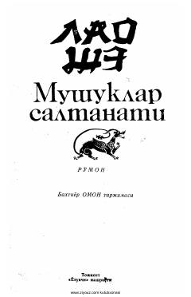

MSJamiyatdagi sun'iy o'zgarishlar va inqiroz haqidagi o'tkir satirik roman.
Ushbu asar 1931-yilda yozilgan bo'lib, unda 20-30-yillardagi jamiyat va odamlar hayotiga majburan kiritilgan sun'iy o'zgarishlarning halokatli oqibatlari tasvirlanadi. Muallif o'ziga xos satirik uslubda jamiyatning inqirozi va xalq kelajagiga tahdid soluvchi kuchlar haqida hikoya qiladi.